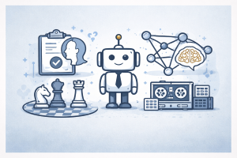

%%{init: {'theme': 'base', 'themeVariables': {'fontSize': '14px'}}}%%
timeline
title 1950s–1960s AI Milestones
1950 : Alan Turing publishes "Computing Machinery and Intelligence"
: Proposes the Turing Test
1955 : Allen Newell & Herbert Simon create the Logic Theorist
1956 : Dartmouth Workshop — AI is officially born
: McCarthy coins the term "Artificial Intelligence"
1957 : Frank Rosenblatt invents the Perceptron
1958 : John McCarthy creates the Lisp programming language
1966 : Joseph Weizenbaum creates ELIZA at MIT
: ALPAC Report kills machine translation funding
1967 : Minsky predicts AI will be solved "within a generation"
1968 : Shakey the Robot at Stanford Research Institute
1969 : Minsky & Papert publish "Perceptrons" — neural net winter begins
1950s–1960s AI Milestones
From the Turing Test to the Perceptron — how the dream of thinking machines was born, flourished, and hit its first wall
Keywords: AI history, Turing Test, Dartmouth Conference, artificial intelligence, Logic Theorist, Perceptron, ELIZA, Shakey the Robot, Lisp, ALPAC Report, 1950s AI, 1960s AI, Marvin Minsky, John McCarthy, Alan Turing, Frank Rosenblatt, Joseph Weizenbaum

Introduction
The 1950s and 1960s were the founding decades of artificial intelligence — a period when mathematicians, psychologists, and engineers dared to ask a question that most people considered absurd: Can machines think?
What began with a single paper by Alan Turing in 1950 ignited a chain reaction of ideas, programs, and predictions that shaped the entire trajectory of computer science. Within just two decades, researchers created the first programs that could prove mathematical theorems, converse in English, recognize visual patterns, and navigate physical spaces. The optimism was extraordinary — leading scientists publicly predicted that machines as intelligent as humans would exist within a generation.
But the 1960s also planted the seeds of disillusionment. Landmark critiques exposed the severe limitations of early approaches, funding agencies began demanding results, and the field was about to enter its first “AI winter.” This article traces the key milestones of those formative years — from the Turing Test to the Perceptron controversy — and examines why they still matter today.
Timeline of Key Milestones
The Turing Test (1950)
In October 1950, Alan Turing published “Computing Machinery and Intelligence” in the journal Mind — a paper that would become the philosophical foundation of artificial intelligence. Rather than tackling the impossibly vague question “Can machines think?”, Turing replaced it with something testable: the Imitation Game.
The setup is elegant. A human interrogator communicates via text with two hidden participants — one human, one machine. If the interrogator cannot reliably tell which is which after sustained conversation, the machine is said to exhibit intelligent behavior. This became known as the Turing Test.
Turing didn’t just propose the test. He systematically addressed nine objections to machine intelligence — from theological arguments to mathematical limitations — and argued persuasively that a thinking machine was “at least plausible.” He even predicted that by the year 2000, computers would be able to fool average interrogators about 30% of the time after five minutes of questioning.
| Aspect | Details |
|---|---|
| Paper | “Computing Machinery and Intelligence” |
| Published | October 1950, Mind journal |
| Author | Alan Turing, University of Manchester |
| Core idea | Replace “Can machines think?” with a behavioral test |
| Format | Text-based conversation with a hidden evaluator |
| Key prediction | By 2000, machines would fool 30% of interrogators |
“I propose to consider the question, ‘Can machines think?’” — Alan Turing, 1950
The Turing Test remained the dominant framework for discussing machine intelligence for over half a century. In 2023, researchers confirmed that OpenAI’s GPT-4 passed the Turing Test, and by 2025, GPT-4.5 was identified as human 73% of the time — far exceeding Turing’s original prediction.
The Logic Theorist (1955–1956)
Before the field even had a name, Allen Newell and Herbert A. Simon (with programmer J. C. Shaw) created what many consider the first artificial intelligence program: the Logic Theorist.
The program was designed to prove theorems from Principia Mathematica, Alfred North Whitehead and Bertrand Russell’s monumental work on the logical foundations of mathematics. The Logic Theorist succeeded in proving 38 of the first 52 theorems — and for some, it found proofs that were more elegant than those in the original text.
Simon later declared that they had “solved the venerable mind/body problem, explaining how a system composed of matter can have the properties of mind.” This was a bold claim, but the Logic Theorist demonstrated something profound: a machine could perform tasks that, when done by humans, would unquestionably be called “thinking.”
| Aspect | Details |
|---|---|
| Created | 1955–1956 |
| Creators | Allen Newell, Herbert A. Simon, J. C. Shaw |
| Task | Prove theorems from Principia Mathematica |
| Result | Proved 38/52 theorems; some proofs more elegant than originals |
| Significance | First program to perform reasoning tasks; debuted at Dartmouth |
The Logic Theorist was presented at the Dartmouth Workshop in the summer of 1956, where it made a powerful impression on attendees. It demonstrated that symbolic manipulation — not just arithmetic — could be performed by machines.
The Dartmouth Workshop (1956)
The summer of 1956 saw the event widely regarded as the birth of artificial intelligence as an academic discipline: the Dartmouth Summer Research Project on Artificial Intelligence.
Organized by John McCarthy (then a young math professor at Dartmouth College), Marvin Minsky, Nathaniel Rochester (IBM), and Claude Shannon (Bell Labs, the father of information theory), the workshop brought together roughly 20 scientists for an extended brainstorming session lasting approximately eight weeks.
The famous proposal stated:
“We propose that a 2-month, 10-man study of artificial intelligence be carried out during the summer of 1956 at Dartmouth College… The study is to proceed on the basis of the conjecture that every aspect of learning or any other feature of intelligence can in principle be so precisely described that a machine can be made to simulate it.”
It was John McCarthy who coined the term “Artificial Intelligence” for this workshop — deliberately chosen to distinguish the new field from cybernetics and avoid the influence of Norbert Wiener. The attendees included many who would dominate AI research for the next two decades: Newell, Simon, Minsky, McCarthy, Shannon, Ray Solomonoff, Oliver Selfridge, and Arthur Samuel.
graph TB
D["Dartmouth Workshop<br/>Summer 1956"] --> O1["John McCarthy<br/>Coined 'AI', created Lisp"]
D --> O2["Marvin Minsky<br/>Neural nets, frames,<br/>MIT AI Lab"]
D --> O3["Allen Newell &<br/>Herbert Simon<br/>Logic Theorist, GPS"]
D --> O4["Claude Shannon<br/>Information theory pioneer"]
D --> O5["Nathaniel Rochester<br/>IBM, neural net simulation"]
D --> O6["Others: Solomonoff,<br/>Selfridge, Samuel..."]
style D fill:#8e44ad,color:#fff,stroke:#333
style O1 fill:#3498db,color:#fff,stroke:#333
style O2 fill:#27ae60,color:#fff,stroke:#333
style O3 fill:#e67e22,color:#fff,stroke:#333
style O4 fill:#e74c3c,color:#fff,stroke:#333
style O5 fill:#f39c12,color:#fff,stroke:#333
style O6 fill:#95a5a6,color:#fff,stroke:#333
| Aspect | Details |
|---|---|
| Date | Summer 1956 (~8 weeks, June–August) |
| Location | Dartmouth College, Hanover, New Hampshire |
| Organizers | John McCarthy, Marvin Minsky, Nathaniel Rochester, Claude Shannon |
| Key outcome | The term “Artificial Intelligence” was coined |
| Attendees | ~20, including Newell, Simon, Solomonoff, Selfridge, Samuel |
| Funding | Rockefeller Foundation |
The Dartmouth Workshop didn’t produce a single breakthrough paper — it was more of an extended conversation. But it gave AI its name, its mission, its first major success (the Logic Theorist), and its key players. As historian Daniel Crevier wrote: “The conference is generally recognized as the official birthdate of the new science.”
The Perceptron (1957–1958)
In 1957, Frank Rosenblatt at Cornell Aeronautical Laboratory introduced the Perceptron — a single-layer neural network that could learn to classify patterns. It was the first machine that could genuinely be said to learn from experience.
The Perceptron was an electro-mechanical device, not a software simulation. It used a grid of photocells connected through adjustable weights to output units, and it could be trained to recognize simple visual patterns — distinguishing shapes, letters, and basic images. The Navy, which funded the research through the Office of Naval Research, was particularly interested in its potential for pattern recognition.
The media response was extraordinary. The New York Times reported that the Navy had revealed “the embryo of an electronic computer that it expects will be able to walk, talk, see, write, reproduce itself, and be conscious of its existence.” Rosenblatt himself predicted the Perceptron “may eventually be able to learn, make decisions, and translate languages.”
| Aspect | Details |
|---|---|
| Invented | 1957 (concept), 1958 (published) |
| Creator | Frank Rosenblatt |
| Institution | Cornell Aeronautical Laboratory |
| What it was | Single-layer neural network; electro-mechanical hardware |
| Capability | Learned to classify simple visual patterns |
| Funding | U.S. Office of Naval Research |
| Key paper | “The Perceptron: A Probabilistic Model for Information Storage and Organization in the Brain” (1958) |
Interestingly, Rosenblatt and Minsky had been schoolmates at the Bronx High School of Science. Their rivalry would later have profound consequences for the field — culminating in the 1969 Perceptrons book that would halt neural network research for nearly two decades.
Lisp (1958)
In 1958, John McCarthy created Lisp (List Processing) — a programming language that would become the lingua franca of AI research for the next three decades.
Lisp was revolutionary for several reasons. It introduced concepts that were far ahead of their time: recursive functions as a core construct, dynamic typing, garbage collection, and the idea that code and data could share the same representation (homoiconicity). These features made it uniquely suited for symbolic AI — manipulating logical expressions, building knowledge representations, and writing programs that could reason about other programs.
| Aspect | Details |
|---|---|
| Created | 1958 |
| Creator | John McCarthy |
| Full name | List Processing |
| Key innovations | Recursive functions, garbage collection, code-as-data |
| Significance | Dominant AI programming language for ~30 years |
| Second oldest HLL | After Fortran (1957), still in use today |
McCarthy’s theoretical foundation for Lisp — the paper “Recursive Functions of Symbolic Expressions and Their Computation by Machine” (1960) — showed that a small set of operators and a notation for functions could define an entire programming language. Lisp is the second-oldest high-level programming language still in use today, after Fortran.
ELIZA (1966)
In 1966, Joseph Weizenbaum at MIT created ELIZA — a program that simulated a Rogerian psychotherapist and became the first chatbot to fool people into thinking they were talking to a human.
ELIZA worked by pattern-matching keywords in the user’s input and rephrasing them as questions. If you said “I’m feeling sad,” ELIZA might respond: “Why do you say you are feeling sad?” It had no understanding of language, no model of the world, and no genuine intelligence. Yet users — even those who knew it was a program — found themselves emotionally engaged in conversations with it.
This phenomenon became known as the ELIZA effect: the human tendency to attribute understanding and emotion to computer outputs, even when none exists. Weizenbaum was deeply troubled by how readily people anthropomorphized his simple program.
| Aspect | Details |
|---|---|
| Created | 1966 |
| Creator | Joseph Weizenbaum |
| Institution | MIT |
| Simulated | Rogerian psychotherapist |
| Technique | Keyword matching + pattern transformation |
| Significance | First chatbot; demonstrated the ELIZA effect |
| Legacy | Weizenbaum became one of AI’s earliest and most vocal ethics critics |
“I had not realized … that extremely short exposures to a relatively simple computer program could induce powerful delusional thinking in quite normal people.” — Joseph Weizenbaum
Weizenbaum’s anxiety deepened when colleague Kenneth Colby adapted ELIZA into a psychotherapy tool. Horrified that a mindless program was being taken seriously as a therapeutic instrument, Weizenbaum wrote Computer Power and Human Reason (1976), one of the first major critiques of AI from within the field. He became, paradoxically, both an AI pioneer and one of its fiercest critics.
The ALPAC Report (1966)
In 1966, the Automatic Language Processing Advisory Committee (ALPAC) published a report that devastated machine translation research. After the U.S. government had spent over $20 million on machine translation since the early 1950s, ALPAC concluded that the technology was slower, less accurate, and twice as expensive as human translation.
The report recommended a major shift in funding — away from machine translation and toward basic research in computational linguistics. The effect was immediate and severe: nearly all funding for machine translation in the United States was cut, and the field would not fully recover for decades.
| Aspect | Details |
|---|---|
| Published | 1966 |
| Committee | Automatic Language Processing Advisory Committee (ALPAC) |
| Finding | Machine translation was slower, less accurate, and 2× more expensive than humans |
| Government spending | Over $20 million since early 1950s |
| Impact | Nearly all U.S. machine translation funding was cut |
The ALPAC Report was an early warning sign. When AI research promised results it couldn’t deliver, the consequences were tangible and lasting. This pattern — overpromise, underdeliver, funding collapse — would repeat in the broader AI winter of the 1970s.
Minsky’s Bold Prediction (1967)
In 1967, Marvin Minsky — co-founder of the MIT AI Laboratory and one of the most influential figures in AI — wrote confidently: “Within a generation… the problem of creating ‘artificial intelligence’ will substantially be solved.”
He was not alone. Herbert Simon and Allen Newell predicted in 1958 that within ten years, a digital computer would be the world’s chess champion (it took until 1997). Simon predicted in 1965 that machines would be capable of “doing any work a man can do” within twenty years. By 1970, Minsky told Life magazine: “In from three to eight years we will have a machine with the general intelligence of an average human being.”
| Prediction | Year | Predicted By | Actual Outcome |
|---|---|---|---|
| Computer chess champion within 10 years | 1958 | Simon & Newell | Deep Blue beat Kasparov in 1997 (39 years later) |
| Machines can do any human work within 20 years | 1965 | Simon | Still not achieved |
| AI solved “within a generation” | 1967 | Minsky | Still not achieved |
| Machine with average human intelligence in 3–8 years | 1970 | Minsky | Still not achieved |
These predictions reflected genuine excitement about the rapid early progress. But they also set expectations that the field could not meet, contributing to the funding crises and disillusionment that followed. The gap between prediction and reality remains one of AI’s persistent challenges.
Shakey the Robot (1966–1972)
In the late 1960s, researchers at the Stanford Research Institute (SRI) built Shakey — the first general-purpose mobile robot that could reason about its own actions. Where previous robots operated through hardwired responses, Shakey combined computer vision, natural language understanding, and planning into a single integrated system.
Shakey could perceive its environment through a TV camera, plan sequences of actions to achieve goals, navigate around obstacles, and push objects. It used the STRIPS (Stanford Research Institute Problem Solver) planning system, which became one of the foundational algorithms in AI planning research.
Life magazine featured Shakey in a 1970 article titled “Meet Shaky, the First Electronic Person” — though the article’s enthusiasm far exceeded Shakey’s actual capabilities. The robot moved at a glacial pace (\sim 2 meters per hour when reasoning) and could only operate in a carefully controlled environment.
| Aspect | Details |
|---|---|
| Built | 1966–1972 |
| Institution | Stanford Research Institute (SRI International) |
| Lead researcher | Charles Rosen; team included Nils Nilsson |
| Key innovation | First robot to integrate vision, planning, and movement |
| Planning system | STRIPS (Stanford Research Institute Problem Solver) |
| Notable coverage | Life magazine, November 1970 |
| Legacy | Inducted into Carnegie Mellon Robot Hall of Fame (2004) |
Despite its limitations, Shakey was a landmark. It demonstrated that AI could be embodied — that planning and reasoning could be connected to perception and action in the physical world. The STRIPS planner it used remains influential in robotics and automated planning to this day.
Perceptrons: The Book That Froze Neural Networks (1969)
In 1969, Marvin Minsky and Seymour Papert published Perceptrons: An Introduction to Computational Geometry — a rigorous mathematical analysis that proved single-layer perceptrons could not solve certain fundamental problems, including the XOR (exclusive or) function.
The book demonstrated that a single-layer perceptron could only classify linearly separable patterns. Any problem requiring a non-linear decision boundary — like XOR — was provably beyond its reach. While multi-layer networks could theoretically overcome this limitation, Minsky and Papert argued (more informally) that there was no reason to believe such networks could be trained effectively.
graph LR
A["Perceptron<br/>(Single-layer)"] --> B["Can solve<br/>linearly separable<br/>problems"]
A --> C["Cannot solve XOR<br/>or non-linear<br/>classification"]
C --> D["Minsky & Papert's<br/>proof (1969)"]
D --> E["Neural network<br/>research freezes<br/>for ~15 years"]
E --> F["Revival with<br/>backpropagation<br/>(1986)"]
style A fill:#f39c12,stroke:#333,color:#fff
style C fill:#e74c3c,stroke:#333,color:#fff
style D fill:#e74c3c,stroke:#333,color:#fff
style E fill:#8e44ad,stroke:#333,color:#fff
style F fill:#27ae60,stroke:#333,color:#fff
| Aspect | Details |
|---|---|
| Published | 1969 |
| Authors | Marvin Minsky and Seymour Papert (MIT) |
| Key finding | Single-layer perceptrons cannot compute XOR |
| Broader claim | Multi-layer networks unlikely to be trainable |
| Impact | Neural network research funding collapsed |
| Duration of freeze | ~15 years (until backpropagation, 1986) |
The impact was devastating. Funding for neural network research dried up almost overnight. Frank Rosenblatt, the Perceptron’s inventor, lost his research funding and died in a boating accident in 1971. It would take until 1986 — when Rumelhart, Hinton, and Williams demonstrated the backpropagation algorithm — for neural networks to make their comeback.
The Perceptrons controversy remains one of the most debated episodes in AI history. The book’s mathematical proofs were correct, but the informal extrapolation to multi-layer networks was arguably too pessimistic. Some historians believe the book’s influence had as much to do with Minsky’s enormous prestige as with its actual technical content.
The Combinatorial Explosion Problem
Running through many of the setbacks of the 1960s was a fundamental technical challenge: the combinatorial explosion. As AI programs tried to handle increasingly complex problems, the number of possible states, actions, or combinations grew exponentially — far beyond what computers of the era (or even modern computers, in many cases) could handle.
A chess game, for example, involves roughly 10^{120} possible game states. A program that tried to evaluate every possible move would run longer than the age of the universe. Early AI researchers had to develop heuristic search techniques — shortcuts and rules of thumb — to navigate these impossibly large spaces. But for many real-world problems, even good heuristics were not enough.
The combinatorial explosion was recognized as a fundamental barrier from the very beginning of AI. As John McCarthy noted, some of the same researchers who founded the field were among the first to acknowledge this limitation. But the broader public — and many funding agencies — didn’t appreciate its severity until research repeatedly hit walls.
The Road to AI Winter
By the end of the 1960s, the initial euphoria was fading. Several forces converged:
- The ALPAC Report (1966) killed machine translation funding in the United States
- The Lighthill Report (1973, UK) would soon do the same in Britain — James Lighthill declared that AI had failed to achieve its “grandiose objectives”
- Minsky & Papert’s Perceptrons (1969) froze neural network research
- The combinatorial explosion proved that brute-force approaches couldn’t scale
- Unfulfilled predictions from top researchers created a credibility crisis
graph TD
A["1950s–1960s<br/>Optimism & Early Successes"] --> B["Turing Test · Logic Theorist<br/>Dartmouth · Perceptron · ELIZA"]
B --> C["Overpromise<br/>AI solved within a generation"]
C --> D["Underpromise<br/>ALPAC · XOR · Combinatorial Explosion"]
D --> E["1970s<br/>First AI Winter"]
style A fill:#27ae60,color:#fff,stroke:#333
style B fill:#3498db,color:#fff,stroke:#333
style C fill:#f39c12,color:#fff,stroke:#333
style D fill:#e74c3c,color:#fff,stroke:#333
style E fill:#8e44ad,color:#fff,stroke:#333
The pattern of boom and bust — wild optimism followed by harsh correction — has repeated multiple times in AI’s history. But the ideas born in the 1950s and 1960s proved remarkably durable. The Turing Test, neural networks, symbolic reasoning, natural language processing, and robotic planning all survived their initial setbacks and eventually flourished — often in forms that would have surprised their original creators.
Video: 1950s–1960s AI Milestones
Please subscribe to the Vectoring AI YouTube channel for more video tutorials 🚀
References
- Turing, A. “Computing Machinery and Intelligence.” Mind, 59(236), 433–460 (1950). doi.org/10.1093/mind/LIX.236.433
- McCarthy, J., Minsky, M., Rochester, N., & Shannon, C. “A Proposal for the Dartmouth Summer Research Project on Artificial Intelligence.” (1955). raysolomonoff.com/dartmouth
- Newell, A. & Simon, H.A. “The Logic Theory Machine.” IRE Transactions on Information Theory, 2(3), 61–79 (1956).
- Rosenblatt, F. “The Perceptron: A Probabilistic Model for Information Storage and Organization in the Brain.” Psychological Review, 65(6), 386–408 (1958).
- McCarthy, J. “Recursive Functions of Symbolic Expressions and Their Computation by Machine.” Communications of the ACM, 3(4), 184–195 (1960).
- Weizenbaum, J. “ELIZA — A Computer Program for the Study of Natural Language Communication Between Man and Machine.” Communications of the ACM, 9(1), 36–45 (1966). doi.org/10.1145/365153.365168
- ALPAC. “Languages and Machines: Computers in Translation and Linguistics.” National Academy of Sciences (1966).
- Minsky, M. & Papert, S. Perceptrons: An Introduction to Computational Geometry. MIT Press (1969).
- Crevier, D. AI: The Tumultuous Search for Artificial Intelligence. BasicBooks (1993).
- McCorduck, P. Machines Who Think. 2nd ed., A. K. Peters (2004).
- Russell, S. & Norvig, P. Artificial Intelligence: A Modern Approach. 4th ed., Pearson (2021).
- Wikipedia. “History of Artificial Intelligence.” en.wikipedia.org/wiki/History_of_artificial_intelligence
Read More
- Explore how modern AI evaluates intelligence — see Turing Exam
- See how neural networks evolved beyond the Perceptron — see Training LLMs for Reasoning
- Understand the modern chatbot descendant of ELIZA — see Prompt Engineering vs Context Engineering
- Learn about pre-training the next generation of language models — see Pre-training LLMs from Scratch
- From Perceptrons to trillion-parameter models — see Quantization Methods for LLMs